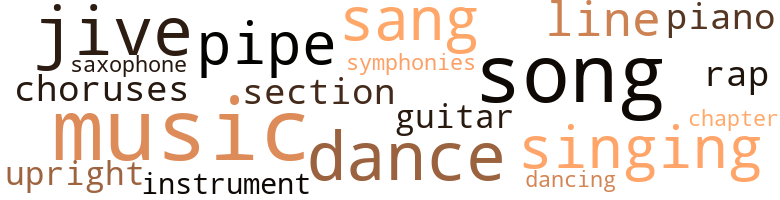
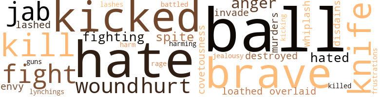
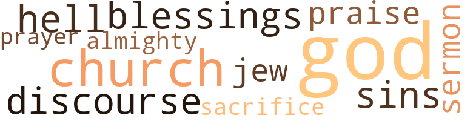

Maud Martha, by Brooks, Gwendolyn (1953)
43 music-related terms matched in this text.
Most frequent terms in this topic: music (7); song (5); jive (4); dance (4); sang (3)
chapter.n.01
Definition: a subdivision of a written work; usually numbered and titled
| word | sentence |
|---|---|
| chapter | " I want you to read this book , " he said , " - but at the right times : one chapter each night before retiring . " |
chorus.n.01
Definition: any utterance produced simultaneously by a group
| word | sentence |
|---|---|
| choruses | Through the day and night this woman , Eugena Banks , sang over and over again - varying the choruses , using what undoubtedly were her own improvisations , for they were very bad - the same popular song . |
dance.n.01
Definition: an artistic form of nonverbal communication
| word | sentence |
|---|---|
| dance | After their second dance he escorted her to a bench by the wall , left her . |
dance.v.03
Definition: skip, leap, or move up and down or sideways
| word | sentence |
|---|---|
| dance | These people knew what whiskies were good , what wine was " the thing " with this food , that food , what places to go , how to dance , how to smoke , how much stress to put on love , how to dress , when to curse , and did not indulge ( for the most part ) in homosexuality but could discuss it without eagerness , distaste , curiosity - without anything but ennui . |
| dance | When the music struck up ; again , he began to dance with someone red-haired and curved , and white as white . |
| dance | Her gold-spangled bosom was pressed - was pressed against that maleness - A man asked Maud Martha to dance . |
| dancing | Another man , dancing past with an artificial redhead , threw a whispered word at Maud Martha 's partner , who caught it eagerly , winked . |
guitar.n.01
Definition: a stringed instrument usually having six strings; played by strumming or plucking
| word | sentence |
|---|---|
| guitar | At the corner of Thirty-fourth and Cottage Grove , a middle-aged blind man on a three-legged stool picked at a scarred guitar . |
jive.v.01
Definition: dance to jive music; dance the jive
| word | sentence |
|---|---|
| jive | They jive you , honey . |
| jive | Well , I jive 'em just like they jive me . |
| jive | Well , I jive 'em just like they jive me . |
| jive | They 'll have to jive much , to come anywhere near my mark in jivin ' . " |
music.n.01
Definition: an artistic form of auditory communication incorporating instrumental or vocal tones in a structured and continuous manner
| word | sentence |
|---|---|
| music | description of Maud Martha what she liked was candy buttons , and books , and painted music ( deep blue , or delicate silver ) and the west sky , so altering , viewed from the steps of the back porch ; and dandelions . |
| music | The popular music has long ago given up and left you . " |
| music | To create - a role , a poem , picture , music , a rapture in stone great . |
| music | How gentle the music was , how suggestive . |
| music | And there was classical music that silvered its way into you and made your back cold . |
| music | The Beau - ties , in their gorgeous gowns , bustling , supercilious ; the young men , who at other times most unpleasantly blew their noses , and darted surreptitiously into alleys to relieve themselves , and sweated and swore at their jobs , and scratched their more inti-mate parts , now smiling , smooth , overgallant ; the drowsy lights ; the smells of food and flowers , the smell of Murray 's pomade , the body perfumes , natural and superimposed ; the sensuous heaviness of the wine-colored draperies at the many windows ; the music , now steamy and slow , now as clear and fragile as glass , now raging , passionate , now moaning and thickly gray . |
| music | When the music struck up ; again , he began to dance with someone red-haired and curved , and white as white . |
musical_instrument.n.01
Definition: any of various devices or contrivances that can be used to produce musical tones or sounds
| word | sentence |
|---|---|
| instrument | The five or six patched and middle-aged men around him sang in husky , low tones , which carried the higher tone - ungarnished , insistent , at once a question and an answer - of the instrument . |
piano.n.01
Definition: a keyboard instrument that is played by depressing keys that cause hammers to strike tuned strings and produce sounds
| word | sentence |
|---|---|
| piano | Nicked old upright piano . |
pipe.n.04
Definition: a tubular wind instrument
| word | sentence |
|---|---|
| pipes | And underneath the low sink coiled unlovely pipes , that Helen said made her think of a careless woman 's underwear , peeping out . |
| pipe | He had not yet bought a pipe . |
| pipes | ; " When you have stove heat , you have to have those ugly old fat black pipes stretching out all over the room . " |
rap.n.05
Definition: genre of African-American music of the 1980s and 1990s in which rhyming lyrics are chanted to a musical accompaniment; several forms of rap have emerged
| word | sentence |
|---|---|
| rap | Once , when she answered a rap on the door , there he was , and he pushed in before she could open her mouth . |
sax.n.02
Definition: a single-reed woodwind with a conical bore
| word | sentence |
|---|---|
| saxophone | A final cry of the saxophone finished that particular slice of the blues . |
section.n.01
Definition: a self-contained part of a larger composition (written or musical)
| word | sentence |
|---|---|
| section | In the fifth section , on the third floor , lived a Woman of Breeding . |
sing.v.02
Definition: produce tones with the voice
| word | sentence |
|---|---|
| sang | Through the day and night this woman , Eugena Banks , sang over and over again - varying the choruses , using what undoubtedly were her own improvisations , for they were very bad - the same popular song . |
| sang | At home he sang . |
| sang | The five or six patched and middle-aged men around him sang in husky , low tones , which carried the higher tone - ungarnished , insistent , at once a question and an answer - of the instrument . |
| singing | And I am glad of that , because my whole body is singing beside him . |
singing.n.01
Definition: the act of singing vocal music
| word | sentence |
|---|---|
| singing | This woman would come over , singing or humming her popular song , to see Maud Martha , wanting to know what special technique was to be used in dealing with a Negro man ; a Negro man was a special type man ; she knew that there should be , indeed , that there had to be , a special technique to be used with this ; type man , but what ? |
| singing | And after all , there should be more than - than singing across the sock washing , the cornbread baking , the fish frying . |
song.n.01
Definition: a short musical composition with words
| word | sentence |
|---|---|
| song | Through the day and night this woman , Eugena Banks , sang over and over again - varying the choruses , using what undoubtedly were her own improvisations , for they were very bad - the same popular song . |
| songs | Maud Martha had her own ideas about popular songs . |
| song | " A popular song , " thought she , '' especially if it 's one of the old , soft ones , is beautiful , sometimes , and seems to touch your mood exactly . |
| song | You rise up with a popular song , but it is n't able to rise as high , once it has you started , as you are ; by the time you 've risen as high as it can take you you ca n't bear to stop , and you swell up and up and up till you 're swelled to bursting . |
| song | This woman would come over , singing or humming her popular song , to see Maud Martha , wanting to know what special technique was to be used in dealing with a Negro man ; a Negro man was a special type man ; she knew that there should be , indeed , that there had to be , a special technique to be used with this ; type man , but what ? |
| song | As in the old song , one hinted , " Tut tut ! |
symphony.n.01
Definition: a long and complex sonata for symphony orchestra
| word | sentence |
|---|---|
| symphonies | The symphonies . |
tune.n.01
Definition: a succession of notes forming a distinctive sequence
| word | sentence |
|---|---|
| line | " And what , " asked Dr. Williams , " did you do yesterday that was out of line with your regular routine ? " |
| line | " Fatherhood , " said Paul , " is not exactly in my line . |
upright.n.02
Definition: a piano with a vertical sounding board
| word | sentence |
|---|---|
| upright | when , squared , upright , terribly upright , superior to the President , commander of the world , he wished to underline Paul 's lacks , to indicate soft shock , controlled incredulity . |
70 violence-related terms matched in this text.
Most frequent terms in this topic: ball (5); kill (4); brave (4); balls (4); kicked (4)
abhor.v.01
Definition: find repugnant
| word | sentence |
|---|---|
| loathed | The one-roomer next the Whitestripes was occupied by Maryginia Washington , a maiden of sixty-eight , or sixty-nine , or seventy , a becrutched , gnarled , bleached lemon with smartly bobbed white hair ; who claimed , and proudly , to be an " indirect " descendant of the first President of the United States ; who loathed the darker members of her race but did rather enjoy playing the grande dame , a hobbling , denture-clacking version , for their benefit , while they played , at least in her imagination , Topsys - and did rather enjoy advising them , from time to time , to apply lightening creams to the horror of their flesh - " because they ai n't no sense in lookin ' any worser 'n you have to , is they , dearie ? " |
anger.n.01
Definition: a strong emotion; a feeling that is oriented toward some real or supposed grievance
| word | sentence |
|---|---|
| anger | He pulled a petal from a pink rose with savage anger , then kissed it with a tenderness that was more terrible than the anger ; briskly he rapped on the table , turned suddenly to stare at her , to see if she approved of what he was doing - she smiled uncertainly ; he saw the big bed , fingered it , sat on it , got up , kicked it . |
| anger | He pulled a petal from a pink rose with savage anger , then kissed it with a tenderness that was more terrible than the anger ; briskly he rapped on the table , turned suddenly to stare at her , to see if she approved of what he was doing - she smiled uncertainly ; he saw the big bed , fingered it , sat on it , got up , kicked it . |
battle.v.01
Definition: battle or contend against in or as if in a battle
| word | sentence |
|---|---|
| battled | . . . They " marched , " they battled behind her brain - the men who had drunk beer with the best of them , the men with two arms off and two legs off , the men with the parts of faces . |
contemn.v.01
Definition: look down on with disdain
| word | sentence |
|---|---|
| disdains | We , who know about Aristotle , Plato , who weave words like anachronism , transcendentalism cosmos , metaphysical , corollary , integer , monarchical , into our breakfast speech as a matter of course - " And he disdains the universities ! " |
covetousness.n.01
Definition: an envious eagerness to possess something
| word | sentence |
|---|---|
| covetousness | There she would sit , frightening everyone , panting , fanning , and glaring at old Mr. Neville , the caretaker 's eighty-two-year-old father , if he came out and so much as dared to look , with an eyeful of timid covetousness , at the single porch chair over which her bottom flowed ( for she was a large lady ) . |
destroy.v.04
Definition: put (an animal) to death
| word | sentence |
|---|---|
| destroyed | Not only was personal love itself , however good , a thing that varied from week to week , from second to second , but the parties to it were likely , for example , to die , any minute , or otherwise be parted , or destroyed . |
envy.n.01
Definition: a feeling of grudging admiration and desire to have something that is possessed by another
| word | sentence |
|---|---|
| envy | How alone they were , how removed from this woman , this ordinary woman who had suddenly become a queen , for whom presently the most interesting door of them all would open , who , lying locked in boards with her " hawhs , " yet towered , triumphed over them , while they stood there asking the stupid questions people ask the sick , out of awe , out of half horror , half envy . |
fight.n.05
Definition: a boxing or wrestling match
| word | sentence |
|---|---|
| fight | Oh no , oh no , she could not stoop to the usual lies ; not today ; her coffee had been too strong , had not set right ; and there had been another fight at home , for her daughter continued to insist on gallivanting about with that Greek - a Greek ! |
fight.v.02
Definition: fight against or resist strongly
| word | sentence |
|---|---|
| fight | I 'm too relaxed to fight today . |
| fighting | Sometimes fighting is interesting . |
| fighting | brotherly love maud martha was fighting with a chicken . |
| fight | He will fight , of course . |
frustration.n.03
Definition: a feeling of annoyance at being hindered or criticized
| word | sentence |
|---|---|
| frustrations | The sobbings , the frustrations , the small hates , the large and ugly hates , the little pushing-through love , the boredom , that came to her from behind those walls ( some of them beaver-board ) via speech and scream and sigh - all these were gray . |
fury.n.01
Definition: a feeling of intense anger
| word | sentence |
|---|---|
| rage | Paul would have twitched , twitched awfully , might have cursed , but after the first tough cough-up of rage would forget , or put off studious perusal indefinitely . |
gun.n.01
Definition: a weapon that discharges a missile at high velocity (especially from a metal tube or barrel)
| word | sentence |
|---|---|
| guns | tree leaves leaving trees airplanes and games and dolls and books and wagons and blackboards and boats and guns and bears and rabbits and pandas and ducks , and dogs and cats and gray elephants with black howdahs and rocking chairs and houses and play dishes and scooters and animal hassocks , and trains and trucks and yo-yos and telephones and balls and jeeps and jack-in-the-boxes and puzzles and rocking horses . |
harm.v.01
Definition: cause or do harm to
| word | sentence |
|---|---|
| harm | - pointing confidently out ( no one would harm them ) . |
| harming | When finally they could be admitted , Belva Brown , Maud Martha and Harry tiptoed into the lackluster room , single file , Gramma lay in what seemed to Maud Martha a wooden coffin , Boards had been put up on cither side of the bed to keep the patient from harming herself . |
hate.n.01
Definition: the emotion of intense dislike; a feeling of dislike so strong that it demands action
| word | sentence |
|---|---|
| hate | There were these scraps of baffled hate in her , hate with no eyes , no smile and - this she especially regretted , called her hungriest lack - not much voice . |
| hate | Even though while the loud hate or silent cold was going on , Mama was so terribly sweet and good to her . |
hate.v.01
Definition: dislike intensely; feel antipathy or aversion towards
| word | sentence |
|---|---|
| hate | I 'll smile at Mrs. Burns-Cooper and hate her just some . |
| hate | There were these scraps of baffled hate in her , hate with no eyes , no smile and - this she especially regretted , called her hungriest lack - not much voice . |
| hates | The sobbings , the frustrations , the small hates , the large and ugly hates , the little pushing-through love , the boredom , that came to her from behind those walls ( some of them beaver-board ) via speech and scream and sigh - all these were gray . |
| hates | The sobbings , the frustrations , the small hates , the large and ugly hates , the little pushing-through love , the boredom , that came to her from behind those walls ( some of them beaver-board ) via speech and scream and sigh - all these were gray . |
| hated | She hated him a little . |
| hated | And see - " Maud Martha hated him again . |
hurt.v.04
Definition: cause damage or affect negatively
| word | sentence |
|---|---|
| hurt | " But he would n't be hurt if anybody told him that - if possible to choose from two , he would without hesitation choose being grand . " |
invade.v.01
Definition: march aggressively into another's territory by military force for the purposes of conquest and occupation
| word | sentence |
|---|---|
| invade | She knew that he believed he had been born to invade , to occur , to confront , to inspire the flapping of flags , to panic people . |
jab.n.02
Definition: a quick short straight punch
| word | sentence |
|---|---|
| jab | Would not have yearned to jerk trimming scissors from purse and jab jab jab that evading eye . |
| jab | Would not have yearned to jerk trimming scissors from purse and jab jab jab that evading eye . |
| jab | Would not have yearned to jerk trimming scissors from purse and jab jab jab that evading eye . |
jealousy.n.01
Definition: a feeling of jealous envy (especially of a rival)
| word | sentence |
|---|---|
| jealousy | If chickens were ever to be safe , people would have to live with them , and know them , see them loving their children , finishing the evening meal , arranging jealousy . |
kick_back.v.02
Definition: spring back, as from a forceful thrust
| word | sentence |
|---|---|
| kicked | He pulled a petal from a pink rose with savage anger , then kissed it with a tenderness that was more terrible than the anger ; briskly he rapped on the table , turned suddenly to stare at her , to see if she approved of what he was doing - she smiled uncertainly ; he saw the big bed , fingered it , sat on it , got up , kicked it . |
| kicked | So he has kicked - not Farrington - but Joyce , maybe , around like a football . |
| kicking | They 've been kicking him around for years , like a football ! " |
| kicked | He gently kicked her toe . |
| kicked | " I guess I 'll read awhile , too , " he decided , when his shoes were off and had been kicked into the kitchen . |
kill.v.10
Definition: cause the death of, without intention
| word | sentence |
|---|---|
| kill | Then I 'm supposed to kill my silly self slavin ' for 'em . |
| killed | Keep her those fairies , with witches always killed at the end , and Santa every winter 's lord , kind , sheer being who never perspires , who never does or says a foolish or ineffective thing , who never looks grotesque , who never has occasion to pull the chain and flush the toilet . |
| kill | Perhaps he had stopped his car short once , and saved a dog , so that another car could kill it a month later . |
| kill | " It 's just going to kill Papa ! " burst out Maud Martha . |
| kill | She had never yet been able to kill a roach . |
knife.n.02
Definition: a weapon with a handle and blade with a sharp point
| word | sentence |
|---|---|
| knife | It had been given a bitter slit with the bread knife and the bread knife had been biting in that vomit-looking interior for almost five minutes without being able to detach certain resolute parts from their walls . |
| knife | It had been given a bitter slit with the bread knife and the bread knife had been biting in that vomit-looking interior for almost five minutes without being able to detach certain resolute parts from their walls . |
| knife | The bread knife had it all to do , as Maud Martha had no intention of putting her hand in there . |
| knife | people could cut a chicken open , take out the mess , with bare hands or a bread knife , pour water in , as in a bag , pour water out , shake the corpse by neck or by legs , free the straggles of water . |
lynching.n.01
Definition: putting a person to death by mob action without due process of law
| word | sentence |
|---|---|
| lynchings | And the Negro press ( on whose front pages beamed the usual representations of womanly Beauty , pale and pompadoured ) carried the stories of the latest of the Georgia and Mississipp lynchings . |
malice.n.01
Definition: feeling a need to see others suffer
| word | sentence |
|---|---|
| spite | But the kernel of the matter was that , in spite of these things , she was poor , and Helen was still the ranking queen , not only with ' the Emmanuels of the world , but even with their father - their mother - their brother . |
| spite | Really - in spite of everything she could not understand why Harry had to hold open doors for Helen , and calmly let them slam in her , Maud Martha 's , his friend 's , face . |
murder.n.01
Definition: unlawful premeditated killing of a human being by a human being
| word | sentence |
|---|---|
| murders | Some few had attempted the tossing of sallies her way , centered in politics , the current murders , or homely philosophy , wanting to draw her out . |
musket_ball.n.01
Definition: a solid projectile that is shot by a musket
| word | sentence |
|---|---|
| balls | So he had waited till early Christmas morning , when a tree was cheap ; so he could not get the lights to burn ; so the tinsel was insufficient and the gold balls few . |
| balls | Tinsel , bulbs , little Santa Clauses and snowmen , and the pretty gold and silver and colored balls did not have to be renewed oftener than once in five years because after Christmas they were always put securely away , on a special shelf in the basement , where they rested for a year . |
| ball | Then , late at night , a family decorating party was held , Maud Martha , Helen and Harry giggling and teasing and occasionally handing up a ball or Santa Claus , while their father smiled benignly over all and strung and fitted and tinseled , and their mother brought in the black walnut candy and steaming cups of cocoa with whipped cream , and plain shortbread . |
| balls | tree leaves leaving trees airplanes and games and dolls and books and wagons and blackboards and boats and guns and bears and rabbits and pandas and ducks , and dogs and cats and gray elephants with black howdahs and rocking chairs and houses and play dishes and scooters and animal hassocks , and trains and trucks and yo-yos and telephones and balls and jeeps and jack-in-the-boxes and puzzles and rocking horses . |
| ball | " I want , " said Paulette , " a wagon , a doll , a big ball , a bear and a tricycle with a horn . " |
| ball | " I want a wagon , a doll , a bear , a big ball , and a tricycle with a horn . " |
| ball | Do n't you remember , when you told Santa Claus you wanted the ball and bear and tricycle and doll he said ' Um-hm ' ? |
| balls | And inevitably the little fellows in knickers , ten , twelve , thirteen years old , nonchalant just for the fun of it - who lingered on the red bricks , throwing balls to each other , or reading newspapers and comic books , or punching each other half playfully . |
| ball | As a ball is to me , so Parrington is to them . |
overlie.v.02
Definition: kill by lying on
| word | sentence |
|---|---|
| overlaid | He had a smooth tan face , overlaid with oil . |
pain.v.02
Definition: cause emotional anguish or make miserable
| word | sentence |
|---|---|
| hurt | Does anything hurt you ? " |
weather.v.01
Definition: face and withstand with courage
| word | sentence |
|---|---|
| brave | " See , Maudie , " she said , " see how brave I was ? |
| brave | She had to be as brave as she could . |
| brave | Bits of pink , of blue , white , yellow , green , purple , brown , black , carried by jerky little stems of brown or yellow or brown-black , blew by the unhandsome gray and decay of the double-apartment buildings , past the little plots of dirt and scanty grass that held up their narrow brave banners please keep off ! |
| brave | And , in the meantime , while people did live they would be grand , would be glorious and brave , would have nimble hearts that would beat and beat . |
whip.v.04
Definition: strike as if by whipping
| word | sentence |
|---|---|
| lashed | His eyes lashed into brightness , his lips opened suddenly and became a smile , and his eyebrows climbed toward his hairline in relief and joy . |
| lashes | Closed eyes ; lashes damp-appearing , heavy lids . |
whiplash.n.01
Definition: an injury to the neck (the cervical vertebrae) resulting from rapid acceleration or deceleration (as in an automobile accident)
| word | sentence |
|---|---|
| whiplash | Then they applied the whiplash . |
wound.n.01
Definition: an injury to living tissue (especially an injury involving a cut or break in the skin)
| word | sentence |
|---|---|
| wound | He strode , and played " catch " with a broken watch , which was attached to a long string wound around nis left arm . |
| wounds | And who had washed those bloody wounds , and afterward vaselined them down ? |
20 religion-related terms matched in this text.
Most frequent terms in this topic: God (8); church (2); sacrifice (1); prayer (1); Almighty (1)
blessing.n.05
Definition: the act of praying for divine protection
| word | sentence |
|---|---|
| blessings | Some folks did not count Marie among his blessings . |
church.n.02
Definition: a place for public (especially Christian) worship
| word | sentence |
|---|---|
| church | She went to church no more than once a month , and she sent little Clement Lewy and other children in the building to the store . |
| church | On the Sundays she condescended to go to church , she wore a pink lace , winter and summer , - which likewise embraced her from ankle to chin . |
god.n.03
Definition: a man of such superior qualities that he seems like a deity to other people
| word | sentence |
|---|---|
| God | She was his wife , and he was the head of the family , and on Christmas night the least he could do , by God , and would do , by God , was stand his friends a good mug of beer . |
| God | She was his wife , and he was the head of the family , and on Christmas night the least he could do , by God , and would do , by God , was stand his friends a good mug of beer . |
| God | When she looked at Maud Martha , it was as if God looked ; it was as if - " Now just how much , Madam , had you thought you would prefer to pay ? " |
| God | Maud Martha saw people , after having all but knocked themselves out below , climbing up the golden , golden stairs , to a throne where sat Jesus , or the Almighty God ; who promptly opened a Book , similar to the arithmetic book she had had in grammar school , turned to the back , and pointed out - the Answers ! |
| God | " It might , " allowed Mama , " be an act of God . |
| God | God may just have reached down , and picked up the reins . " |
| God | " Yes , " Maud Martha cracked in , " that 's what you always say - that God knows best . " |
| God | God did not answer the prayer . |
godhead.n.01
Definition: terms referring to the Judeo-Christian God
| word | sentence |
|---|---|
| Almighty | Maud Martha saw people , after having all but knocked themselves out below , climbing up the golden , golden stairs , to a throne where sat Jesus , or the Almighty God ; who promptly opened a Book , similar to the arithmetic book she had had in grammar school , turned to the back , and pointed out - the Answers ! |
hell.n.01
Definition: any place of pain and turmoil
| word | sentence |
|---|---|
| hell | And to heck with , in fact , to hell with , her fruitcakes and coffees . |
jew.n.01
Definition: a person belonging to the worldwide group claiming descent from Jacob (or converted to it) and connected by cultural or religious ties
| word | sentence |
|---|---|
| Jew | - not even a Jew , which , though revolting enough , was at least becoming fashionable , was " timely . " |
praise.n.02
Definition: offering words of homage as an act of worship
| word | sentence |
|---|---|
| praise | She thought she had praise coming to her . |
prayer.n.01
Definition: the act of communicating with a deity (especially as a petition or in adoration or contrition or thanksgiving)
| word | sentence |
|---|---|
| prayer | God did not answer the prayer . |
sacrifice.v.04
Definition: make a sacrifice of; in religious rituals
| word | sentence |
|---|---|
| sacrifice | Should she be wanting to sacrifice more , for the sake of her man ? |
sermon.n.01
Definition: an address of a religious nature (usually delivered during a church service)
| word | sentence |
|---|---|
| discourse | These must be , however , when possible , sandwiched in between thick hunks of the most rational , particularistic , critical , and intellectually aloof discourse . |
sermon.n.02
Definition: a moralistic rebuke
| word | sentence |
|---|---|
| sermon | She did not need information , or solace , or a guidebook , or a sermon - not in this sun ! |
sin.n.06
Definition: violent and excited activity
| word | sentence |
|---|---|
| sins | Such domestic sins were shocking enough . |